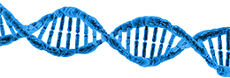
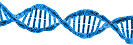

Nine months, intensive Java bootcamp with an individual mentorship and three projects:
- individual (draughts game),
- group (back-end of the online store with REST API)
- final project (web application that allows the user to book a sports training session with a coach of their choice).
CERTIFICATE

 
